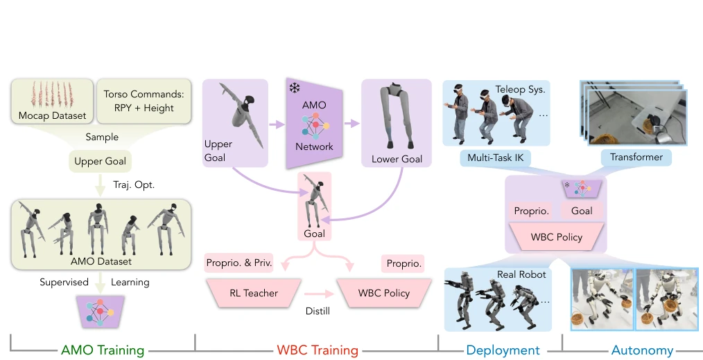
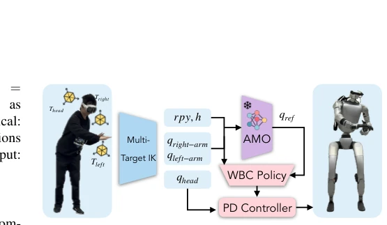
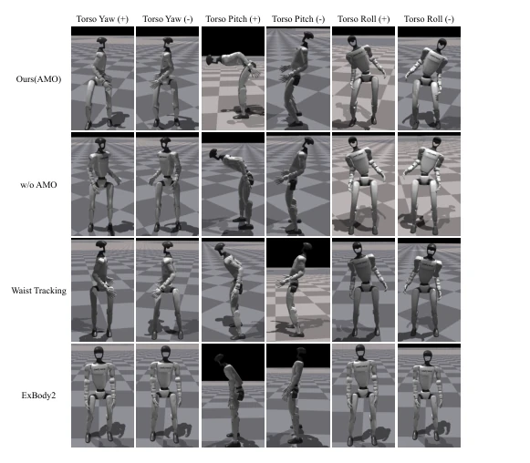
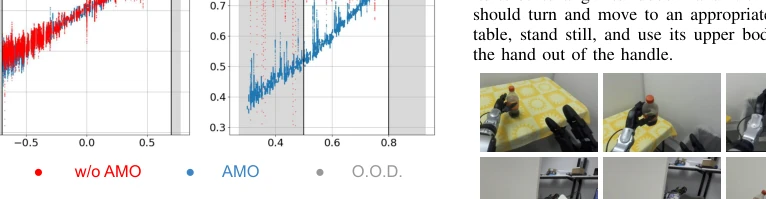
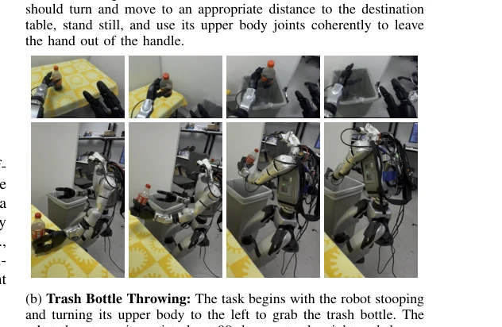
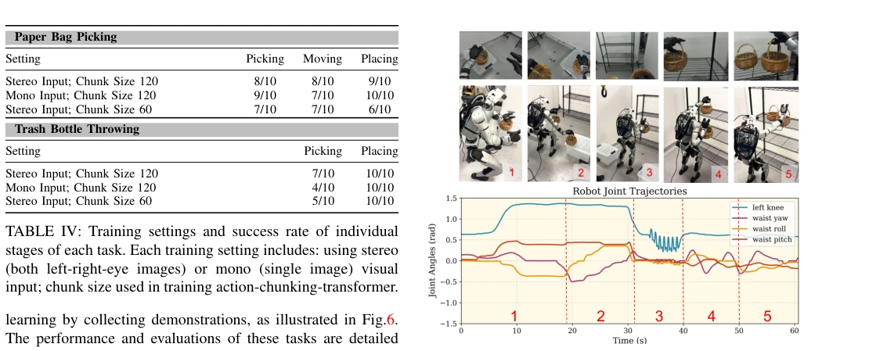

Fig. 1: AMO enables hyper-dexterous whole-body movements for humanoid robots. (a): The robot picks and places a can on platforms of different heights. (b): The robot picks a bottle from the higher shelf on the left and puts it on the lower table on the right. (c): The robot stretches its legs to put the bottle on a high shelf. (d-g): The robot demonstrates a wide range of torso pitch, roll, yaw, and height adjustments. (e): The robot utilizes hip motors to compensate waist joint limits to achieve larger roll rotation.
方法Method
系统分四步走。首先是数据准备，AMO 模块训练：从 AMASS 采样手臂动作，随机采样躯干指令（rpy, h），用 BoxFDDP 做轨迹优化生成下肢关节参考，训练一个 MLP 把躯干指令映射为下肢参考。其次是 RL 策略训练：用 Teacher-Student 蒸馏，Teacher 用真值（privileged info），Student 用历史 proprioception，目标是跟踪速度和躯干指令。然后是遥操作：用多目标 IK 解算上半身目标，生成中间指令给 AMO 模块，再传给下肢策略。最后是自主执行：用 ACT 模仿学习遥操作数据。核心创新是 AMO 模块作为桥梁，解决了纯 RL 难以学习躯干 - 下肢协调的问题，同时避免了 TO 的实时性瓶颈。通过这种分层设计，实现了从稀疏目标到具体关节动作的转化，且 IK 部分采用 Levenberg-Marquardt 算法优化多目标距离。
—

Fig. 2: System overview. The system is decomposed into four stages: 1. AMO module training by collecting AMO dataset using trajectory optimization; 2. RL policy training by teacher-student distillation in simulation; 3. real robot teleoperation by IK and retargeting; 4. real robot autonomous policy training by imitation learning (IL) with a transformer.

Fig. 3: Teleoperation system overview. The operator provides three end-effector targets: head, left wrist, and right wrist poses. A multi-target IK computes upper goals and intermedi- ate goals by matching three weighted targets simultaneously. The intermediate goals (rpy, h) are fed to AMO and converted to lower goals.
实验Experiments
在 Unitree G1 上验证。对比基线包括无 AMO 模块、无特权信息、随机手臂等。指标看躯干跟踪误差（yaw, pitch, roll, height）和最大控制范围。结果显示 AMO 在 pitch 和 height 跟踪上显著优于基线，尤其是 height 跟踪，没有 AMO 几乎学不会。躯干控制范围也更大，能实现完全弯腰。O.O.D. 测试表明泛化能力强。自主任务如捡纸袋、扔瓶子成功率较高。但消融实验也暴露了问题，比如无 AMO 模块时 height 跟踪误差巨大，说明该模块至关重要。Table II 和 Table III 详细量化了这些优势，证明了其在真实场景中的有效性。特别是 Basket Picking 任务展示了复杂长视距任务的能力，但 stereo vision 比 mono 效果更好，说明感知也很重要。
—

Fig. 4: Comparison of torso orientation ranges.

Fig. 5: Evaluation of in-distribution (I.D.) and out-of- distribution (O.O.D.) tracking results. Each figure shows the target vs. the actual commanded direction. The white area indicates I.D., meaning the command is used in both trajectory optimization and RL training. The grey area indicates O.O.D., meaning the command is not used in either trajectory opti- mization or RL training. The red and blue curves represent w.o. AMO and AMO, respectively.

Fig. 6: Autonomous tasks performed in the real-world setting. For each task, we collect 50 episodes using the teleoperation system and train an ACT to complete it autonomously.

Fig. 7: Basket Picking: A complicated loco-manipulation task that also requires whole-body coordination. The task begins with the robot picking two baskets from left(1) and right(2), which are placed at low heights and close to the ground. Then, the robot stands up, moves forward(3), and puts two baskets on the shelf at eye level(4,5). The motor angle trajectories along the autonomous rollout are displayed and labeled to match the corresponding phases.